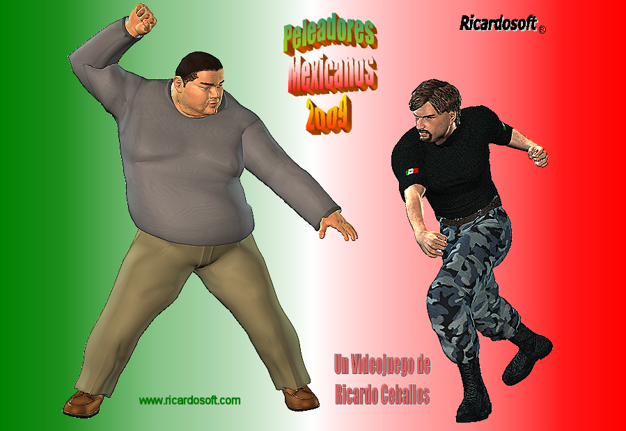
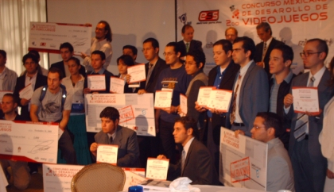

| Ricardosoft Peleadores Mexicanos | |

|
Historial |

|
Screenshots |

|
Peleadores |

|
Como Jugar |

|
Fondos |

|
Prensa |

|
Comprar |
Ricardosoft Peleadores Mexicanos
La historia del videojuego Mexicano comienza aquí
Un videojuego de Ricardo Ceballos
Historial
30 de Marzo de 2009 Peleadores Mexicanos 2009 estara disponible muy pronto, aqui mismo informaremos de la fecha exacta.
2 de Marzo de 2009, Ya esta listo el flyer del nuevo videojuego Peleadores Mexicanos 2009: 
5 de Febrero de 2009, ¡Viva México! Ricardosoft Peleadores Mexicanos 2009 próximamenteRicardosoft Peleadores Mexicanos 2009 será terminado próximamente y estara listo para los móviles Sony Ericsson w600i/w610i/w550i y para los Nokia 6235 y 6265. ¡Viva México! Feliz 5 de febrero.
15 de Septiembre de 2008, ¡Viva México! Ricardosoft Peleadores Mexicanos 2008 para Sony Ericsson w600i/w610i listoSe ha culminado exitosamente el desarrollo de la versión 2.0 de Peleadores Mexicanos 2008, la cual facilitará ampliamente el porting de juego a muchos modelos, y para estrenar la versión el juego ya esta disponible para los SonyEricsson w600i/w610i. ¡Viva México! Felices fiestas patrias
21 de Julio de 2008, Ricardosoft Bloques 2008 se ha sumado a la oferta de IUSACELL/UNEFON.Ahora también Ricardosoft Bloques se encuentra disponible para descargarse desde la tienda 3G de IUSACELL/UNEFON, de manera que junto con "Peleadores Mexicanos" se suman dos videojuegos 100% mexicanos en el mercado.
11 de Abril de 2008, Ricardosoft Peleadores Mexicanos 2008 ya esta disponible comercialmente.Tenemos el gusto de informarles que desde el 1ro de abril Ricardosoft Peleadores Mexicanos 2008 ¡ya esta en la tienda 3G de IUSACELL/UNEFON! listo para descargarse, con lo que se convierte oficialmente en el primer videojuego mexicano en el mercado, esta disponible para los celulares nokia 6235, 6265 y 6275
1 de Octubre de 2007, Ricardosoft Peleadores Mexicanos 2008 versión Móvil liberado.El desarrollo de Ricardosoft Peleadores Mexicanos 2008 ha finalizado. Pronto estara disponible a través de las principales compañias de telefonía celular del país.
16 de Noviembre de 2006, Primer lugar para Ricardosoft Bloques.
Ricardosoft Bloques fue el ganador del primer lugar en el 2do concurso mexicano de videojuegos en la categoria profesional dispositivos móviles

Más información en El Universal


Ricardosoft es una marca registrada. Copyright 2009
contacto: contacto@ricardosoft.com